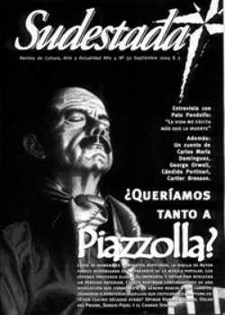

Buscar
Astor Piazzolla: La soledad de un provocador apasionado
A más de una década de su muerte y lejos de homenajes y tributos repetidos, la huella de Astor Piazzolla parece desdibujada en el presente de la música popular argentina. Los jóvenes que se acercan al tango prefieren eludir su impronta y optan por rescatar un período anterior. Cuesta rastrear continuadores de una revolución que conmovió a un género en decadencia y reacio a los cambios. ¿Ganaron o perdieron aquellos que criticaron su ruptura estética cuatro décadas atrás? Opinan Horacio Ferrer, Oscar del Priore, Sergio Pujol y el Chango Spasiuk.
Edición N° 32
Septiembre 2004
Revista bimensual
Comprar edición impresaSumario
- Astor Piazzolla: La soledad de un provocador apasionado
- Próxima estación: desesperanza
- Introducción al mundo de los sueños
- George Orwell, la sospecha de la libertad
- Palo Pandolfo: "Es un milagro que todavía esté haciendo música porque soy muy antisistema"
- Cándido Portinari
Compartir Articulo
El tipo aquel, el loco ese, miraba el espectáculo de insultos y trompadas y se reía. Se veía que se reía ahí, detrás del bandoneón, perdido en la multitud de sombras y gritos y silbidos, observador pasivo de aquella trifulca fenomenal a metros del escenario.
El loco ese se reía, disfrutaba viendo la indignación que provocaba su música, su presencia, parado, la pierna sobre un taburete, el pecho afuera, la vista arriba y la melodía... Esa melodía los sacaba a los tipos, los ponía como fieras. "¡Hereje!", le gritaban los taxistas que lo obligaban a bajarse del tacho y lo dejaban a gamba en plena avenida Corrientes. "¡Tomátelas!", se escuchaba justo en mitad de un solo inconfundible, desde el rincón más oscuro del teatro. "¿Pero quién se cree que es este tipo?", se preguntaban furiosos los comentaristas por la radio, mientras Piazzolla se despachaba contra cualquier tanguero de la vieja guardia que osara cruzarse en su camino. Arriba, en el escenario, la melodía prendía la mecha con una dulzura armónica irrepetible, provocadora, subversiva.
Abajo, en el reaccionario y entonces decadente ambiente del tango, la bomba estallaba en mil pedazos. "¡Dejá de provocar, loco!", le sugerían amigablemente los conocidos.
Y el tipo, el loco ese, se reía como un chico.
"Yo soy el pueblo, soy Piazzolla pero soy mi pueblo. Yo capto, aspiro, absorbo las cosas de mi país y las vuelco en mi música. Mi música cambia porque mi país cambia.
Además, y esto mis enemigos nunca lo entenderían, Argentina es un país infinitamente nuevo. ¿Cuántas cosas más pueden pasar?: miles. ¿Cuántas cosas van a cambiar?: todas, por eso la música no puede quedarse", vociferaba ese loco de sonrisa amplia y espaldas anchas mientras, en la superficie, la revolución que desataba su música dejaba un tendal de heridos en el campo de batalla tanguero.
Pasaron por el filoso cuchillo de la crítica de Piazzolla tipos pesados como Horacio Salgán o Mariano Mores (a quien lo acusó de imitar a Francisco Canaro), y hasta el mismísimo Aníbal Troilo ("Si me atara la mano izquierda a la espalda y me rompiera un par de dedos de la derecha, podría tocar como él", llegó a decir). El odio y la bronca se expandía. Y era lógico, un universo como el tango que comenzaba su parábola descendente en materia creativa, se topaba con un invitado poco simpático, un irrespetuoso, un soberbio, un genio de nombre Astor Piazzolla. Y no fueron pocos los que se encargaron de fustigar su música con mil agravios, de intentar minimizar su obra, de pretender apagar una brisa que se hacía tormenta en medio de un debate que propició el mismo Piazzolla en su momento y que le permitió ir, de a poco, ganando cada una de aquellas batallas.
Cuando lo encontró la muerte, después de una agonía interminable que sembró sus últimos años de una tristeza agobiante, comenzó otra historia. Ahora sí Piazzolla era un indiscutible. Homenajes y tributos se organizaban en todo el planeta, el tango se llenó de imitadores de sus gestos y sus ritmos, la televisión y la radio hicieron suyas cada una de las melodías que lo identificaban como compositor y todos los sellos discográficos se apresuraban en poner a la venta cuanta grabación extraña se rescatara del silencio del archivo, con el oportunismo comercial que las caracteriza. Piazzolla había ganado, después de todo, aquel combate estético para el que había decidido poner su cuerpo. Por fin lo popular se entroncaba con lo musicalmente erudito en una sola persona, y por fin un tanguero lograba absorber la admiración de jóvenes acostumbrados a otros ritmos y otras cadencias, lejanas a las más tradicionales de Buenos Aires.
Pero algo pasó. Atrás se han quedado los aniversarios grises y apagados con que se recuerda su impronta, atrás también han caído las cientos de no muy logradas versiones de sus temas en manos de intérpretes de todo el mundo.
Y atrás quedó también ese placer de encontrarse con Piazzolla y sus compases inconfundibles en cuanta bandita de pibes jóvenes uno fuera a escuchar, seducidos por el mito de un tango silenciado por la ausencia de creatividad y renovación. Hoy Piazzolla es presa de una indiferencia extraña, quizás transitoria, de aquellos que ahora se sienten atraídos por los paisajes y los climas del tango de la vieja guardia, que parece renacer en aquellos aspectos más bien laterales de su historia. El clima, el contexto social, la textura musical de una época que Piazzolla barrió a los golpes de fuelle en su momento.
Muchos de sus más acérrimos críticos hoy festejarían (si no los hubiera alcanzado la muerte también) esta curiosa indiferencia que asola la obra de Astor. Prevalece ahora la mirada comercial, preparada para regocijar los ojos del turista con elementos que Piazzolla, justamente, se encargó de eliminar: el baile, en primer lugar. Las cantantes con impostados aires de arrabales ausentes, en segundo. Las grandes orquestas, en tercero.
"Todo el mundo me decía que si lo que yo hacía no se podía bailar, eso no era tango. Que el tango es para bailar. ¿Y por qué no van a bailar con Gardel, que algunos compases los hace en tres? Menos mal que encontré a Gardel ¿no? A mí me gusta que la gente me escuche, porque yo estoy escribiendo para que se escuche, no para que se baile", afirmaba Piazzolla entonces, ya escindido de la tutela de Aníbal Troilo y su orquesta, ya decidido a salir a romper todo, a boca suelta y con un bandoneón en la rodilla.
"Yo siempre odié al bailarín", afirmaba Astor en otra entrevista: "Tenía un gran problema con esta gente, de repente les metía el tres-dos-dos y los bailarines se hacían un nudo y se caían al suelo. No me voy a olvidar que una noche, tocando en un cabaret, arranqué un tango con una introducción de cello, con acompañamiento en acordes. Nada bailable. Las bailarinas del cabaret salieron en puntas de pie para tomarme el pelo. '¿Qué es eso?', '¿te pensás que estás en el Colón?', me decían".
Pero Piazzolla entonces estaba lejos del Colón, se ganaba la vida con los arreglos en la orquesta de Troilo y proponiendo osados cambios en la orquesta, lo que aceleró su salida...
***
Crónica de una revolución sin final
Por Sergio Pujol, periodista y crítica literario
En la música popular argentina, Piazzolla fue uno de los grandes compositores e intérpretes, aunque en realidad lo definiría como un compositor-intérprete, porque si bien en música popular no se puede entender la composición sin la interpretación, en el caso particular de Piazzolla además de la cualidad intrínsecamente interpretativa, hay algo muy pulsional en él que hizo que identifiquemos su música con su presencia física: parado, por ejemplo, tocando el bandoneón, primer rasgo físico que lo diferencia de todos los tangueros que hasta aquel momento tocaban sentados.
Piazzolla toca parado, flexiona la pierna izquierda, tiene una presencia corporal muy notable y su música tiene una cosa pulsional que la vuelve muy singular.
La composición está muy personalizada. Sin embargo Piazzolla fue un músico con formación muy sólida, escribía perfectamente todo, entonces se da esta dualidad: su música hay que escucharla tocada por él, pero no excluye la posibilidad de otras interpretaciones. Lo primero que diría es que es el gran compositor-intérprete de música popular argentina.
Por otro lado es un vanguardista, y hablar de vanguardia dentro de un género de música popular como es el tango ya de por sí es problemático. Piazzolla dentro del tango produce una ruptura muy violenta de las convenciones del género.
Prácticamente todos los parámetros musicales se alteran con su obra, se altera la armonía, el ritmo, la melodía, el timbre porque introduce instrumentos ajenos a la tradición del tango, como la batería, la guitarra eléctrica y el bajo eléctrico. Y finalmente deja un corpus de composiciones muy notables que está a la altura de los grandes nombres de la historia del tango, más instrumentales que vocales, esa también es otra de sus particularidades: cuando elige el tango-canción no hace tango, hace balada-canción, sale de la atmósfera del tango-canción para entrar en la atmósfera de la balada porque lo que busca, sobre todo con la poesía de Horacio Ferrer, es también producir una ruptura en el plano de la canción.
Y finalmente, la música de Piazzolla es muy cantabile también, sobre todo la segunda parte de sus tangos: tiene una primera parte muy rítmica y una segunda parte melódica. Son muchísimas las discusiones técnicas que genera su música, pero esencialmente son discusiones musicales, es decir, no hay en Piazzolla expresiones extra musicales que generen demasiado revuelo. Todo lo interesante que tuvo para decir lo dijo con su música o a su alrededor, cuando opinó sobre política dijo sandeces y siempre se contradijo.
Hubo muchas personalidades difíciles en el tango, Piazzolla fue una de ellas. Fue muy agresivo, pero con una agresividad que siempre puso en la causa de la música.
***
Retrato de Astor Piazzolla
Por Horacio Ferrer, poeta y autor de varias letras de temas de Piazzolla.
Conozco a Piazzolla en 1948. Sabía perfectamente de la joven personalidad de Astor, músico audaz y tanguista diferente, ya que lo había seguido desde 1940 con su bandoneón en la gran orquesta de Aníbal Troilo. Es una época en la que se presentan muchos jóvenes directores, Domingo Federico, Salgán, Madema, Francini-Pontier, Goñi, Basso, Mores. Todos conquistan sus propios adeptos. También Astor Piazzolla que ha tenido siempre devotos a ultranza. Como otros hinchas, escucho entonces a su orquesta por las radios, en películas de cine, en bailes, aunque mi preferencia es disfrutarla en los cafés de Buenos Aires y de Montevideo, que son las salas de concierto en las que nada ni nadie nos perturba la audición.
En el café Ateneo, disfrutamos de esos arreglos de Astor con sus polirritmias, sus variaciones osadas y endemoniadamente atractivas. Una noche, cuando ha concluido una sección, lo encaro cariñosamente: -Maestro, quiero expresarle nuestra admiración, en representación de toda una barra de hinchas suyos, que conocemos todo lo que usted crea, compramos sus discos y hasta lo hemos visto en la película "El hombre del sábado". Usted nos hermosea la vida. Muchas gracias, Astor.
Estando Piazzolla en París, para estudiar con Nadia Boulanger, un amigo porteño me da la dirección de Astor: Hotel Fiat. Rue de la Douai, Montmartre. Le escribo, y me contesta, y cuando vuelve de regreso, su barco fondea en Montevideo. Viene con su esposa Dedé. Es una noche de chaparrón en el puerto. Baja del «Coracero», vapor de carga en el que viaja, proponiéndome que vayamos a cenar. Le digo que antes visitaremos un cierto lugar sin decirle de qué se trata. Lo llevo al sótano de la Guardia Nueva, donde trescientos jóvenes, en su mayoría estudiantes lo ovacionamos ante su asombro y él nos toca, en bandoneón solo, sus tangos compuestos y grabados en Paris, obsequiándonos además sus discos franceses con obras nuevas.
***
(La nota completa en la edición gráfica de Sudestada N°32)
Comentarios
Hugo Montero, Ignacio Portela
Articulos más vistos


LIBRERÍA SUDESTADA

Colección infantil

Distribuidora de Libros

Suscripción

Sudestada en URUGUAY

Otros articulos de esta edición
Cándido Portinari
En la Fundación Proa se exhibe un recorte de la obra del plástico brasileño Cándido Portinari. Desde la mirada de ...
 Entrevista
Entrevista
Palo Pandolfo: "Es un milagro que todavía esté haciendo música porque soy muy antisistema"
 Antihéroes
Antihéroes
George Orwell, la sospecha de la libertad
Pocas cosas son como se las ve a primera vista en la vida de Orwell, desde su participación en la ...
Próxima estación: desesperanza
 Ficción
Ficción